SPHINX-DOC 安裝 (Windows)
測試環境
- 作業系統：Windows 7(64位元)
- Python：3.4.1
- SPHINX-DOC：1.2.3
安裝 Python
- 執行Python安裝程式『python-3.4.1.msi』，使用預設值『Install for all users』
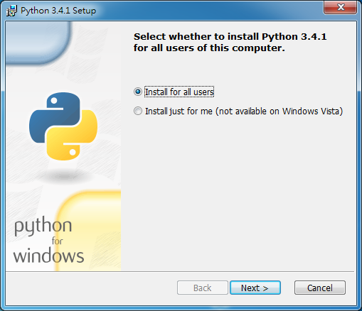
- 選擇安裝目錄，使用預設值『C:\Python34\』
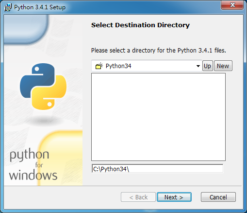
- 客製化安裝，這地方移到最後一個項目『Add python.exe to Path』，這預設是沒有選的，因為是第一次安裝，所以就把這個選項一起安裝，主要是將「C:\Python34\;C:\Python34\Scripts;」這一串文字自動加入到環境變數的Path中，如果沒有選取安裝，需自行手動加入。
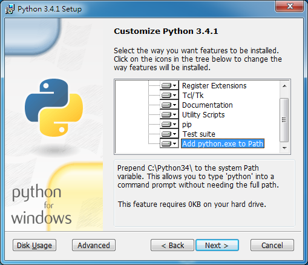
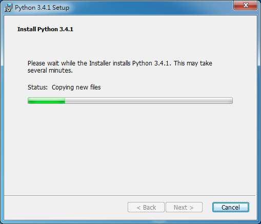
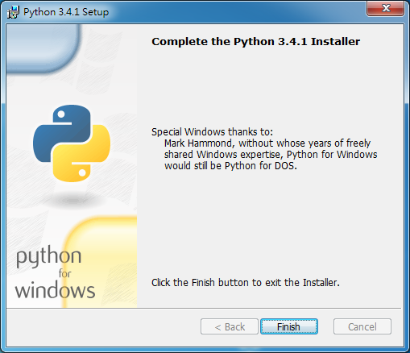
- 執行命令提示字元「開始->所有程式->附屬應用程式->命令提示字元」，然後直接輸入『python』，就會看到如下的畫面，如果沒有請先確認系統環境變數的path是否有設定python的資料夾路徑「C:\Python34\;C:\Python34\Scripts;」
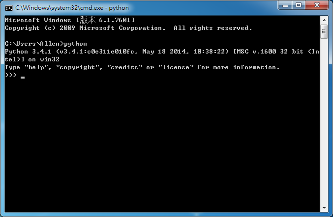
安裝easy_install
- 下載 ez_setup.py , 如下圖所下載的「ez_setup.py」存放在「C:\Users\Allen\」下並使用命令提示字元執行『python ez_setup.py』
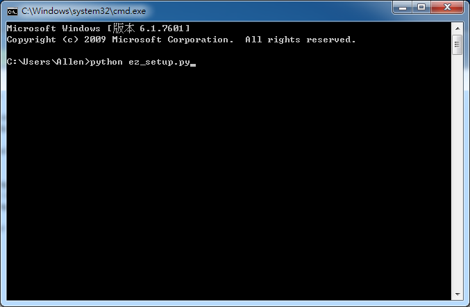
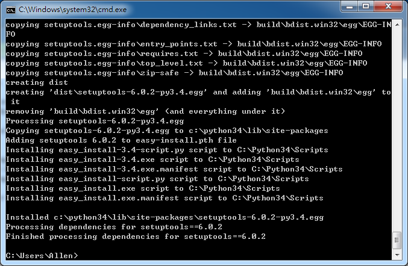
安裝Sphinx
- 安裝好『easy_install』，接著輸入『easy_install sphinx』，安裝的時後需要一點時間
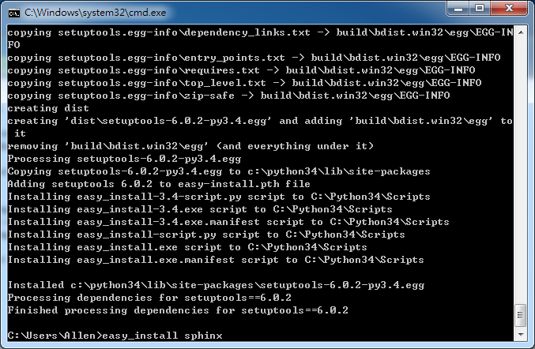
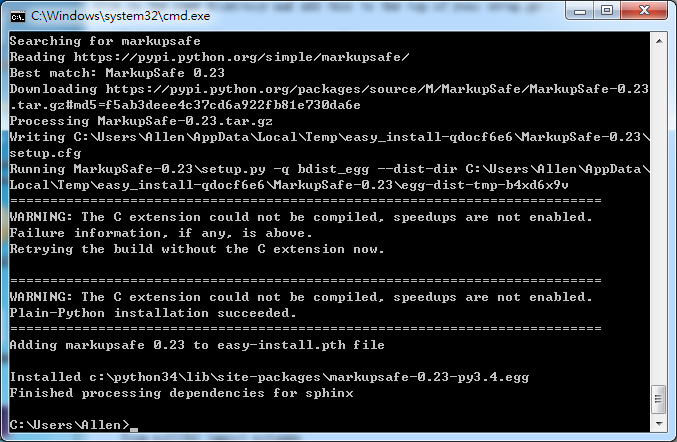
- 安裝完成後，請輸入『sphinx-build』測試是否可以正常執行，如下圖
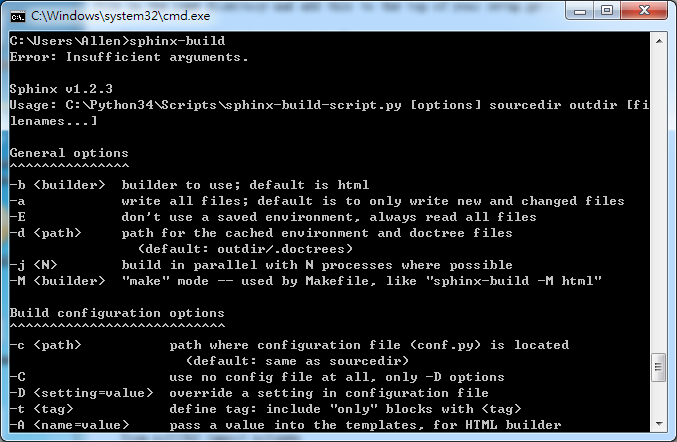